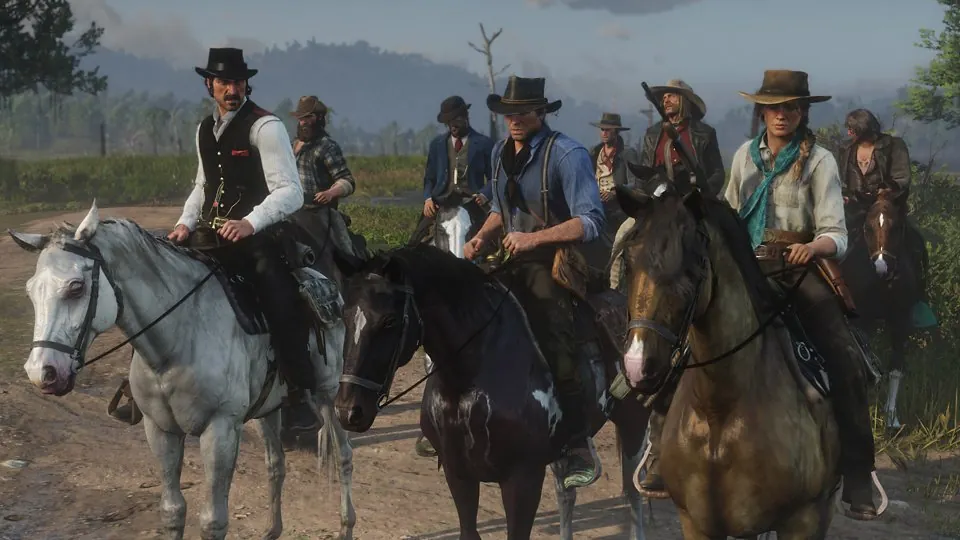
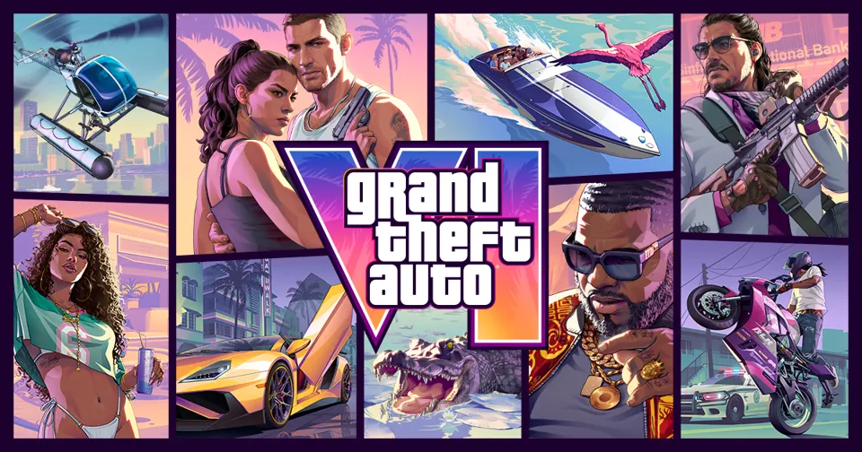
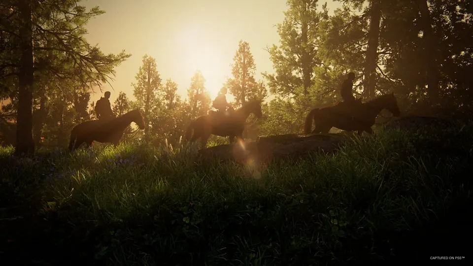

荒野大镖客
西部、荒野与时代的变迁。骑马穿过山谷与小镇，开放世界之外，还有人与人之间的故事。
官方介绍与图片来源你好，我是 Denis。
探索 AI Agent，也把时间留给山野、电影、游戏和 F1。
正在做的项目 / 01
OPEN SOURCE
Lester 是我目前正在做的开源 AI Agent 工作空间。
我喜欢体验新的 Agent 产品，也喜欢拆开看它们如何工作。
从对话方式、工具使用，到上下文、记忆和执行环境，我关心这些设计最终会怎样影响使用体验：Agent 能理解多少背景？任务中断后能否继续？人应该在什么时候参与判断？
我会不断追问：一个新功能解决了什么问题，又让哪些原本困难的事情变得容易了？喜欢动手尝试，也喜欢在尝试中慢慢形成自己的判断。
会期待 Max 的精彩表现，也喜欢琢磨比赛里的细节：赛车在不同赛道的竞争力、轮胎策略、进站时机，以及天气变化带来的机会。
从排位赛到正赛，享受速度、判断与不确定性交织的过程。
看电影也是我的日常爱好。给自己留一段完整的时间，跟着银幕里的故事走一会儿。
喜欢的游戏里，有 R 星的《荒野大镖客》和 GTA 系列，也有 PlayStation 的《最后生还者》。从西部荒野到城市街头，再到末世旅途，是几种不同的世界与故事。

西部、荒野与时代的变迁。骑马穿过山谷与小镇，开放世界之外，还有人与人之间的故事。
官方介绍与图片来源洛圣都的城市街头、三位主角交织的故事，还有自由探索的开放世界。
官方介绍与图片来源
持续关注的系列新作：从罪恶都市到 Leonida，看看 R 星会如何构建下一个开放世界。
官方介绍与图片来源
乔尔与艾莉穿越末世的旅程。生存之外，故事也围绕人与人之间的关系和艰难选择展开。
官方介绍与图片来源游戏配图来自官方宣传素材；图片及相关作品版权归各自权利人所有。